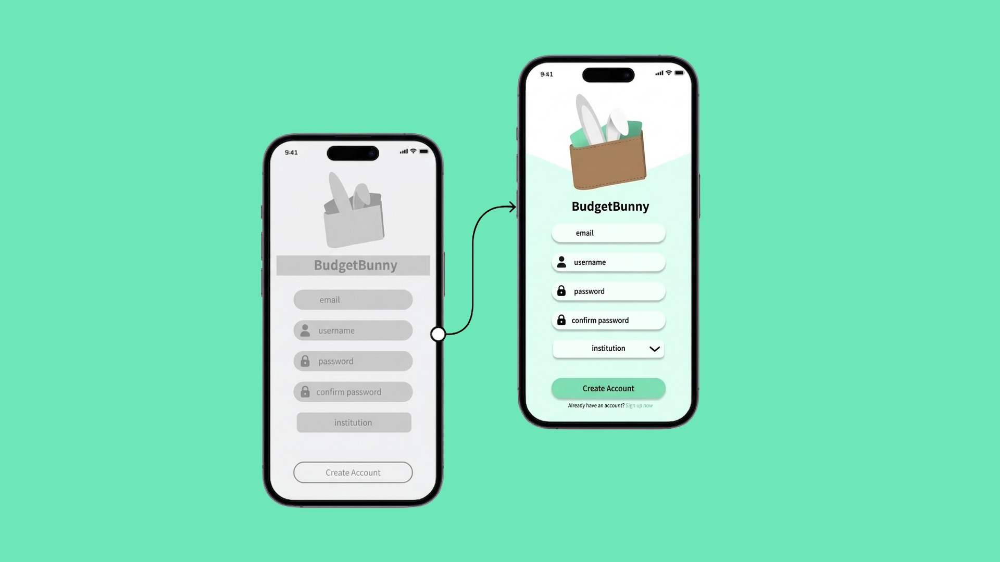
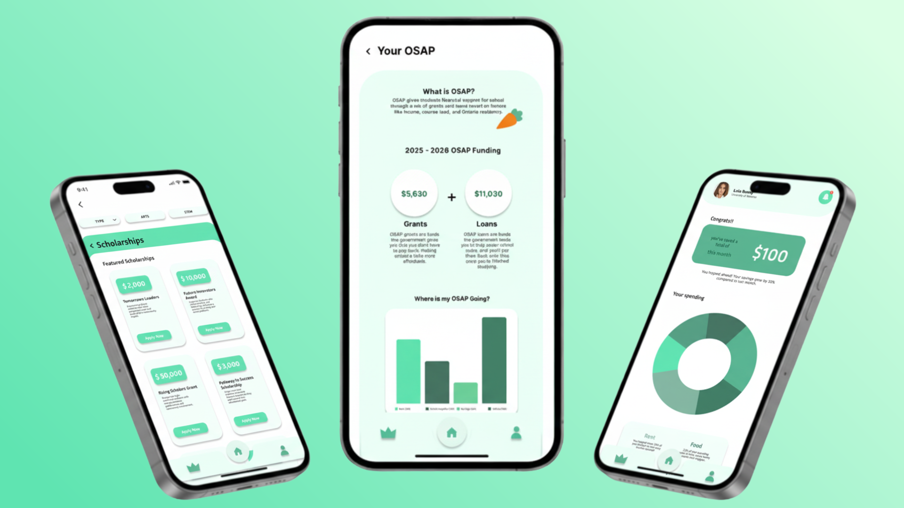

UX / App Design Case Study
A student finance app prototype designed to make budgeting, scholarships, OSAP, and credit education feel clearer, more supportive, and less overwhelming.

Budget Bunny is a high-fidelity app prototype created to help university students manage their finances with more confidence. The app brings together budgeting, OSAP tracking, scholarship discovery, savings tools, payment reminders, and financial education in one place.
Team setup: This project was completed in a group of three.
My role: I helped conduct interviews and research, and I created wireframes in Figma. My work focused on understanding student needs early in the process and translating those insights into clearer screen structure, layout, and flow.
Students often feel overwhelmed by budgeting, OSAP, deadlines, and credit card information. Earlier prototype testing showed recurring confusion around navigation, onboarding, page hierarchy, and understanding financial content.
Designed to make student finance feel less intimidating.
My contribution focused on research and early UX structure. I helped gather user insights through interviews, looked for common pain points in how students talk about money, and used those findings to build wireframes in Figma that organized information more clearly.
I thought carefully about hierarchy, especially how to make complex financial content feel easier to scan, understand, and move through on a mobile screen.
The final prototype includes a welcome page, login and account creation, budgeting tools, featured scholarships, OSAP visualization, deadline management, savings tracking, meal planning, social budgeting, flights, and credit card education.
These features were prioritized because they directly addressed the biggest pain points found in interviews and usability testing, especially around financial stress, overspending, and difficulty understanding funding.

I started by helping gather research on student financial challenges, then used those insights to support the wireframing process. In Figma, I focused on how screens connected, what information should appear first, and how users could move between tasks without feeling lost.
This meant thinking beyond visuals and focusing on usability fundamentals, such as hierarchy, clarity, and reducing confusion in the overall flow.
The prototype was tested through realistic student tasks such as signing up, clearing notifications, adding an expense, finding credit card information, and locating a scholarship. Overall, participants rated the app very positively and found it easy to use and well integrated.
The testing showed that Budget Bunny was highly learnable, but it also revealed a few areas that needed refinement.
This project showed me how research and wireframing directly affect usability. I learned that even small layout and hierarchy decisions can make financial information feel either overwhelming or approachable.
It also strengthened my ability to turn user needs into structured interface decisions, not just polished screens.
Budget Bunny became a more focused and supportive prototype that helps students manage finances without overwhelming them. The final version shows how usability testing and early UX thinking can shape stronger interface decisions.
This project reflects the kind of design work I enjoy most: making complex information feel easier, more human, and more approachable.
Explore the Budget Bunny prototype in Figma to see the wireframes, flow, and final interaction design.